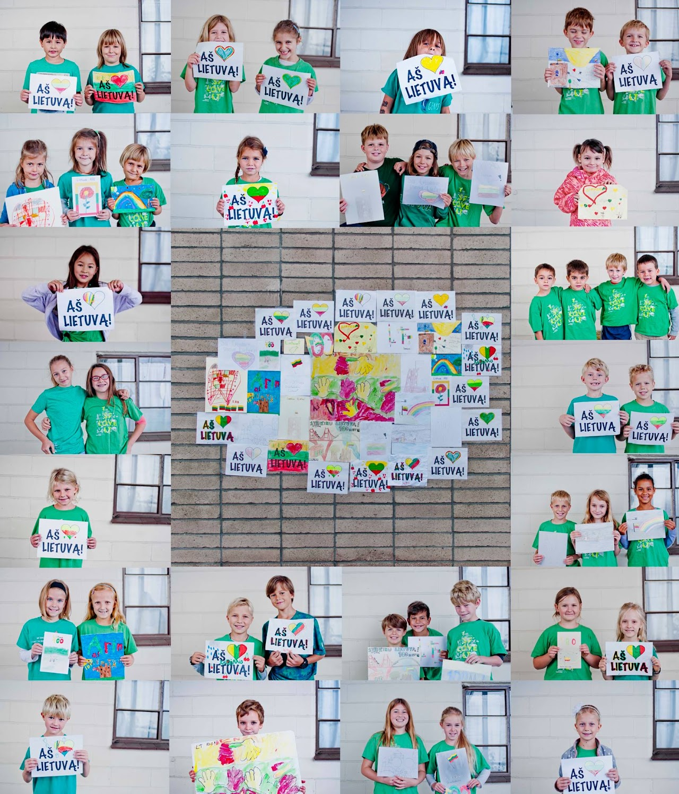
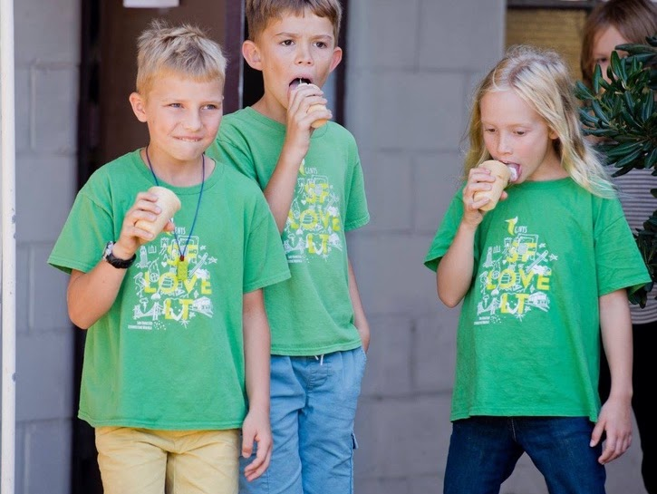
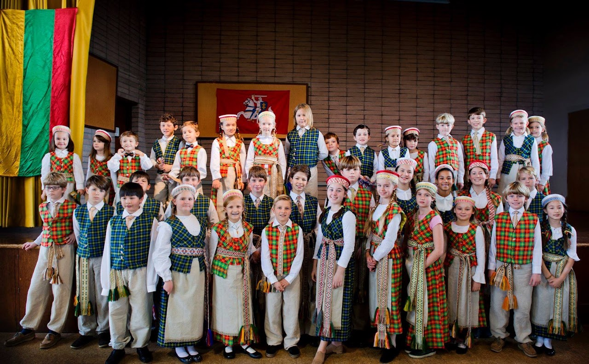
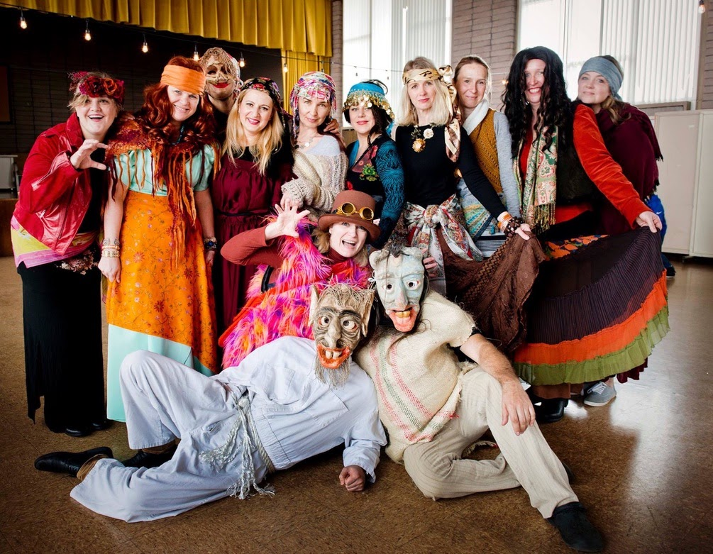

APIE MUS
Misija ir tikslai
Mūsų misija – kurti gyvą, jaukią ir įkvepiančią lietuvišką erdvę vaikams bei šeimoms.
Siekiame, kad mokiniai pasitikėtų savimi kalbėdami lietuviškai, pažintų Lietuvos istoriją ir kultūrą bei didžiuotųsi savo kilme.
Misija, veikla ir bendruomenė




MISIJA
San Francisko lituanistinė mokykla „Genys”, veikianti Castro Valley vietovėje, Kalifornijos valstijoje, yra nepelno siekianti neformalaus švietimo organizacija, veikianti pagal JAV lietuvių bendruomenės Švietimo Tarybos taisykles.
San Francisko lituanistinės mokyklos „Genys” misija – ugdyti jaunąją kartą sąmoningais pasaulio lietuviais, mokyti juos lietuvių kalbos, ugdyti meilę Lietuvai, lietuvių kalbai ir jos raštui, supažindinti su lietuvių tautos istorija, papročiais ir tradicijomis, kad jaunoji karta išlaikytų lietuviškumą ir galėtų puoselėti savo ryšius su Lietuva.
VEIKLA
Lituanistinė mokykla „Genys”, burianti San Francisko lietuvius, buvo įkurta 2006 metais. Mokyklos bendruomenę šiuo metu sudaro daugiau nei 40 mokinių, 8 mokytojos bei aktyvus tėvų komitetas. „Genio” mokykla veikia šeštadieniais, ne mažiau kaip 26 savaitgalius per metus. Mokslo metai lituanistinėje mokykloje „Genys” prasideda antrą rugsėjo savaitgalį ir baigiasi trečią gegužės savaitgalį. Mokykloje veikia ikimokyklinio ugdymo grupė ir 1-8 mokyklos klasės.
Mokykloje vaikai mokomi lietuvių kalbos (kalbėjimo, skaitymo, rašymo, klausomos kalbos supratimo) bei Lietuvos valstybės pažinimo (šalies istorijos, kultūros, Lietuvos geografijos, lietuvių literatūros, bendruomenės pažinimo). Didelis dėmesys skiriamas Lietuvos šventėms, papročiams, tradicijoms, tautiniam muzikiniam išsilavinimui, tautiniams šokiams, žaidimams.
San Francisko lituanistinės mokyklos „Genys” mokiniai aktyviai įsitraukia į Pasaulio lietuvių bendruomenės veiklas- dalyvauja konkursuose, stovyklose, šokių ir dainų šventėse, o mokytojų kolektyvas nuolatos ieško galimybių tobulėti, rengia bei dalyvauja įvairiuose pedagogų seminaruose, mokymuose.
San Francisko lituanistinės mokykla „Genys”, kaip ir kitos lituanistinės JAV mokyklos, priklauso JAV paveldo kalbų sąjungai, kuri įsipareigoja saugoti ir vystyti JAV gyventojų gimtąsias (paveldo) kalbas (kitas negu anglų). JAV Paveldo kalbų sąjunga prisijungia prie visuotinės JAV organizacijų ir institucijų pastangos skatinti JAV gyventojus be anglų kalbos mokėti ir profesionaliai taikyti kitas kalbas.